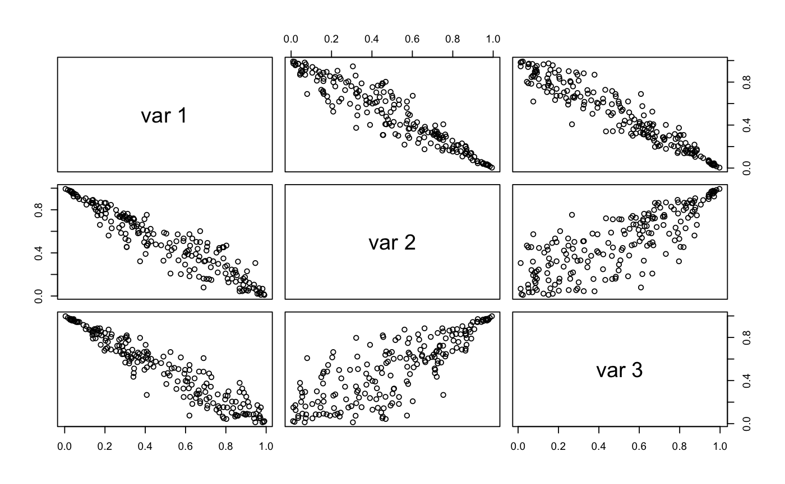

Vine copula models
vinecop_dist(pair_copulas, matrix) dvinecop(u, vinecop) pvinecop(u, vinecop, n_mc = 10^4) rvinecop(n, vinecop)
| pair_copulas | A nested list of 'bicop_dist' objects, where
|
|---|---|
| matrix | A quadratic structure matrix of dimension
|
| u | evaluation points, either a length d vector or a d-column matrix, where d is the number of variables in the vine. |
| vinecop | an object of class |
| n_mc | number of samples used for quasi Monte Carlo integration. |
| n | number of observations. |
# specify pair-copulas bicop <- bicop_dist("bb1", 90, c(3, 2)) pcs <- list( list(bicop, bicop), # pair-copulas in first tree list(bicop) # pair-copulas in second tree ) # specify R-vine matrix mat <- matrix(c(1, 2, 3, 1, 2, 0, 1, 0, 0), 3, 3) # set up vine copula model vc <- vinecop_dist(pcs, mat) # show model summary(vc)#> tree edge conditioned conditioning family rotation parameters #> 1 1 3, 1 bb1 90 3, 2 #> 1 2 2, 1 bb1 90 3, 2 #> 2 1 3, 2 1 bb1 90 3, 2# simulate from the model u <- rvinecop(200, vc) pairs(u)# evaluate the density and cdf dvinecop(u[1, ], vc)#> [1] 16.38483pvinecop(u[1, ], vc)#> [1] 3e-04